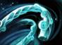
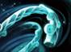

Blink Dagger
Активная: Blink Мгновенно перемещает к указанной точке на расстоянии до 1200. Предмет нельзя использовать, если последние 3.0 сек. его владелец получал урон от вражеских героев или Рошана. Если применить на себя, переместит в сторону союзного фонтана. Если применить предмет дальше, чем позволяет способность, дальность перемещения составит 4/5 от максимально возможной. Легендарный кинжал, которым когда-то пользовался самый быстрый убийца на свете. Можно найти в лавке на базе. Является компонентом
Arcane boots
+ 45 к скорости передвижения + 250 к мане Активная: Восстанавливает 160 маны всем союзникам вокруг. Радиус: 1200 Бонусы к скорости передвижения от нескольких пар ботинок не складываются. Не работает на клонах Meepo. Магу, что носит эти ботинки, всегда рады в бою. Shop secretМожно найти в потайной лавке Является компонентом Состоит из
Magic wand
+ 3 ко всем атрибутам Активная: Мгновенно восстанавливает 15 здоровья и маны за каждый имеющийся заряд. Может иметь до 20 зарядов. Получает один заряд каждый раз, когда видимый враг в радиусе 1200 использует способность. Получает заряды, когда видимый враг в радиусе 1200 использует способность. Предметы и некоторые способности не добавляют зарядов. Простая волшебная палочка, в которой концентрируют магическую энергию начинающие волшебники и великие колдуны. Shop mainМожно найти в лавке на базе Является компонентом . Состоит из

Aghanim's Scepter
+ 10 ко всем атрибутам
+ 175 к здоровью
+ 175 к мане
Пассивная: Ability Upgrade
Улучшает ульт и некоторые способности.
Скипетр колдуна, мощью сходного с полубогами.
Shop secretМожно найти в потайной лавке
Является компонентом
 Состоит из
Состоит из
Force Staff
+ 10 к интеллекту
+ 2.5 к восстановлению здоровья
Активная: Force
Толкает выбранное существо в направлении его взгляда на расстояние в 600.
Дальность применения: 550
Можно применить на себя.
Не прерывает действия цели.
Не работает на существ под воздействием способностей Chronosphere, Duel или Black Hole.
Позволяет вам манипулировать другими во благо или во зло.
Shop mainМожно найти в лавке на базе
Является компонентом
 Состоит из
Состоит из

Eul's Scepter of Divinity
+ 10 к интеллекту
+ 3.5 к восстановлению маны
+ 20 к скорости передвижения
Активная: Cyclone
Поднимает выбранную цель в воздух, делая её неуязвимой на 2.5 сек. Можно использовать только на себя или противника.
Если применить на врага, то по приземлении он получит 50 магического урона.
Дальность применения: 575
Тип развеивания: нормальное
Нельзя применять на союзников.
Использование на себя проходит сквозь невосприимчивость к магии.
Использование снимает некоторые положительные и отрицательные эффекты.
Эффект можно развеять.
Загадочный скипетр, прошедший сквозь века, позволяет творить своими непокорными ветрами как добрые, так и злые дела.
Можно найти в потайной лавке.
Является компонентом
 Состоит из

Состоит из

.png)